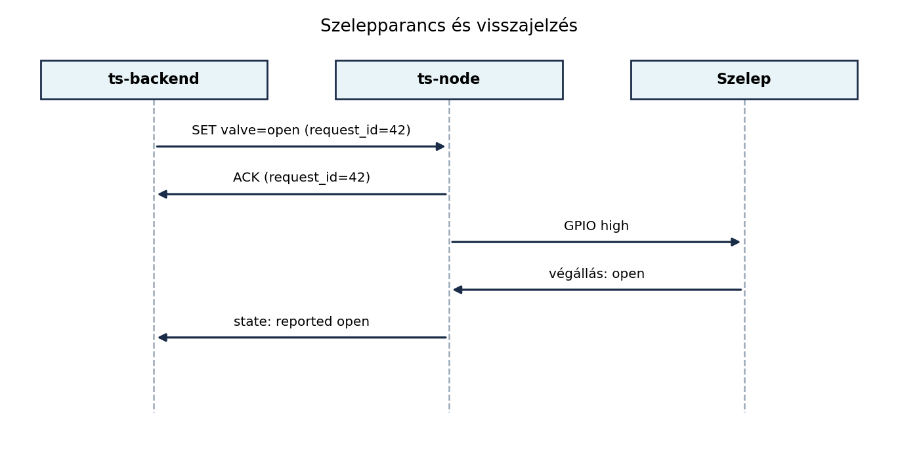

Az aktuátorok vezérlése az a pont, ahol az IoT-rendszer visszahat a fizikai világra. Egy szenzor hibás olvasása kellemetlen, de egy hibásan nyitva maradt öntözőszelep eláraszthat egy üvegházat, vagy egy beragadt fűtőrelé tönkreteheti a termést. A TerraSense üvegházában a talajnedvesség-szenzorok adatai alapján akarjuk nyitni és zárni az öntözőszelepet; ehhez olyan szoftver kell, amelyik akkor is biztonságos állapotba kerül, ha egy parancs elvész, a tápfeszültség pillanatra kimarad, vagy a visszajelző érzékelő meghibásodik.
Definíció. Az aktuátor (actuator) olyan eszköz, amely elektromos jelet fizikai hatássá alakít: mozgássá, hővé, fénnyé vagy áramlássá. IoT-kontextusban jellemzően szelep, relé, motor, fűtőszál vagy LED.
A mikrovezérlő kimenete általában logikai szintű GPIO jel, amely ritkán tud közvetlenül nagy teljesítményű terhelést kapcsolni. A leggyakoribb felépítés az, hogy a GPIO egy relét vagy egy félvezető kapcsolót (tranzisztort, MOSFET-et, SSR-t) vezérel, az pedig a tényleges eszközt kapcsolja. Egy mágnesszelep (solenoid valve) esetén a nyitáshoz és a záráshoz is lehet külön kimenet. A TerraSense szelepe a Nem funkcionális követelmények: energia, költség, élettartam, megbízhatóság, biztonság alfejezet szerint bistabil (impulzusvezérelt) szelep: 3 V-on 50 ms-os impulzus vált nyitott és zárt állapot között, és az állapotot áram nélkül tartja. (A hálózatról táplált kerti rendszerekben gyakori a normally closed, NC szelep, amely áram hatására nyit és áramtalanítva zár; ez passzív fail-safe, de folyamatos gerjesztést igényel, ezért az elemes node-on nem használható.)
/* GPIO-kimenet egy szelep számára Zephyr-ben */
#include <zephyr/drivers/gpio.h>
#include <zephyr/device.h>
#include <errno.h>
#define VALVE_NODE DT_ALIAS(valve)
static const struct gpio_dt_spec valve_gpio =
GPIO_DT_SPEC_GET(VALVE_NODE, gpios);
int valve_hw_open(const struct gpio_dt_spec *gpio, bool open)
{
int rc;
if (gpio == NULL || !device_is_ready(gpio->port)) {
return -ENODEV;
}
/* A szelep kívánt állapota: 1 = nyitott, 0 = zárt (a bistabil szelep
* fizikailag 50 ms-os impulzussal vált; a labor szimulált GPIO-ja az
* állapotot modellezi) */
rc = gpio_pin_set_dt(gpio, open ? 1 : 0);
return rc < 0 ? rc : 0;
}Ha a szelep nem csak kétállapotú, hanem arányosan állítható (például motoros keverőszelep), akkor PWM kimenetet használunk. A PWM kitöltési tényezője határozza meg a motor pillanatnyi sebességét vagy egy fűtőelem teljesítményét, és a vezérlő szoftverben ugyancsak egy 0–100% közötti értékkel modellezhető.
A biztonságos alapállapot két szinten jelenik meg:
A TerraSense öntözőszelepének biztonságos alapállapota zárt, tehát a szoftveres fail-safe is zárást kell, hogy előírjon, ha elveszett a kapcsolat vagy lejárt a maximális öntözési idő. Mivel a bistabil szelep áramkimaradáskor nem zár magától, a node tápfelügyelete (brown-out) egy tartalék kondenzátorból kiadott záróimpulzussal valósítja meg a hardveres fail-safe zárást.
Definíció. A maximális bekapcsolási idő (maximum on-time) az az időtartam, ameddig egy aktuátor megszakítás nélkül aktív állapotban maradhat. Ha a vezérlő eddig nem kapott érvényes leállító parancsot, akkor az aktuátort saját hatáskörben biztonságos állapotba állítja.
A maximális bekapcsolási idő véd a szoftverhibák, eltűnt hálózati parancsok és hibás szenzoradatok ellen. Például ha a talajnedvesség-szenzor beragad „száraz” értékre, az öntözés ne folyhasson órákig: a vezérlő legfeljebb 10 percig tarthatja nyitva a szelepet, utána automatikusan zár.
A visszajelzés (feedback) azt jelenti, hogy a rendszer nem csak kiadja a parancsot, hanem ellenőrzi is az aktuátor tényleges állapotát. Egy mágnesszelepnél a visszajelzés lehet:
Ha a parancsolt állapot (requested) és a visszajelzett
állapot (reported) tartósan eltér, akkor hibát jelzünk: a
szelep lehet, hogy mechanikusan beragadt, a relé nem kapcsolt, vagy a
visszajelző érzékelő hibás. Az ilyen eltérésre a biztonságos válasz
általában az, hogy a szelepet megkíséreljük zárni, a hibát pedig
naplózzuk és jelentjük a backend felé. A visszajelzés nélküli nyílt
hurkú vezérlés csak akkor elfogadható, ha a kockázat kicsi, és a
rendszer más szinten (például túlfolyásgátló, mechanikus nyomáskapcsoló)
már védve van.
/* Szelepvezérlő állapot időkorláttal és visszajelzéssel */
#define VALVE_MAX_ON_LIMIT_MS (60LL * 60LL * 1000LL) /* 1 óra felső korlát */
struct valve_ctrl {
const struct gpio_dt_spec gpio; /* kimeneti GPIO */
bool requested_open; /* parancsolt állapot */
bool reported_open; /* visszajelzett állapot */
int64_t on_deadline_ms; /* mikor kell lezárni */
int64_t max_on_time_ms; /* maximális bekapcsolási idő */
bool hw_present; /* szimulációban false */
};
int valve_init(struct valve_ctrl *v, int64_t max_on_time_ms, bool hw_present)
{
int rc;
if (!v) return -EINVAL;
if (max_on_time_ms <= 0 || max_on_time_ms > VALVE_MAX_ON_LIMIT_MS) {
return -EINVAL;
}
v->requested_open = false;
v->reported_open = false;
v->on_deadline_ms = 0;
v->max_on_time_ms = max_on_time_ms;
v->hw_present = hw_present;
/* Ellenőrzött alapállapot: a kimenet zárt, mielőtt bármit nyitnánk. */
if (hw_present) {
rc = valve_hw_open(&v->gpio, false);
if (rc < 0) {
return rc;
}
}
return 0;
}
int valve_set_target(struct valve_ctrl *v, bool open)
{
int rc;
if (!v) return -EINVAL;
if (v->requested_open == open) {
/* Idempotens: azonos parancs nem vált, és nem hosszabbítja meg
* a biztonsági maximális nyitvatartási határidőt. */
return 0;
}
if (!v->hw_present) {
/* natív szimulációban csak naplózzuk */
v->reported_open = open;
} else {
rc = valve_hw_open(&v->gpio, open);
if (rc < 0) {
/* Sikertelen hardverírás: a kért állapot nem lép életbe,
* a biztonságos alapállapot zárt. */
(void)valve_hw_open(&v->gpio, false);
return rc;
}
}
v->requested_open = open;
if (open) {
v->on_deadline_ms = k_uptime_get() + v->max_on_time_ms;
} else {
v->on_deadline_ms = 0;
}
return 0;
}
int valve_tick(struct valve_ctrl *v)
{
if (!v) return -EINVAL;
/* 1. időkorlát ellenőrzése */
if (v->requested_open && v->on_deadline_ms != 0 &&
k_uptime_get() >= v->on_deadline_ms) {
printk("valve: max on-time exceeded, forcing close\n");
return valve_set_target(v, false);
}
/* 2. visszajelzés olvasása valós hardveren */
if (v->hw_present) {
/* pl. egy bemeneti GPIO-t olvasunk */
/* v->reported_open = gpio_pin_get_dt(&sense_pin); */
}
/* 3. eltérés kezelése */
if (v->reported_open != v->requested_open) {
/* rövid türelmi idő után hiba; itt most azonnal jelezzük */
printk("valve: feedback mismatch, req=%d rep=%d\n",
v->requested_open, v->reported_open);
return -EIO;
}
return 0;
}A fenti kód a hardveres állapotgép vázát mutatja: a
valve_hw_open() hibakódot ad vissza, a
valve_init() pedig csak pozitív, egy óránál nem nagyobb
maximális bekapcsolási időt fogad el, és ellenőrzi a kimenet zárt
alapállapotát. A visszajelző bemenet konkrét GPIO-ját a board
devicetree-je és a későbbi labor adja meg; a 6.3.2-ben ezért szerepel
kommentként a beolvasás. A laborban a hw_present értéke
false, ezért a GPIO-írás és a visszajelzés-olvasás nem fut
le: a labor a biztonsági logikát szimulált állapotátmenetekkel mutatja
be, a valós hardveres zárást és visszajelzést éles eszközön kell
igazolni.
A fenti valve_set_target() függvény
idempotens: ugyanazzal az állapottal többször meghívva
nem váltogat, hanem ugyanazt az eredményt adja. Ez döntő különbség a
váltás (toggle) szemantikához képest. Ha az MQTT-kapcsolat
rövid megszakadása miatt ugyanaz a „nyisd ki” parancs kétszer érkezik
meg, a toggle parancs kétszeri végrehajtása hibásan zárt állapotot
eredményezne; az idempotens set_target(true) viszont
egyszer nyit, másodjára semmit sem változtat. Az ismételt OPEN parancs a
biztonsági maximális nyitvatartási határidőt sem indítja újra: a
parancsdeduplikáció és a védelmi időkorlát külön mechanizmus, különben
sűrű ismétléssel korlátlanul nyitva lehetne tartani a szelepet. Az
idempotencia tehát a parancs megismételhetőségét
biztosítja, ami az at-least-once kézbesítés (QoS 1) természetes
következménye.
A valve_set_target() és a valve_tick()
együtt egy kis állapotgépet valósít meg. Az alábbi ábra (a) része az
állapotokat és az átmeneteket, a (b) rész a labor forgatókönyvét
(ismételt nyitás a 4. másodpercben, zárás a 10.-ben), a (c) rész a 3.
feladat türelmi idős visszajelzés-ellenőrzését mutatja.
| Állapot | Esemény | Őrfeltétel | Akció | Új állapot |
|---|---|---|---|---|
| ZÁRT | set_target(true) |
requested_open == false |
kimenet be, határidő = most + max_on_time_ms |
NYITVA |
| NYITVA | set_target(true) |
requested_open == true |
nincs (idempotens, a határidő nem változik) | NYITVA |
| NYITVA | set_target(false) |
– | kimenet ki, határidő törlése | ZÁRT |
| NYITVA | valve_tick() |
most nem kisebb, mint a határidő | max on-time exceeded figyelmeztetés, zárás |
ZÁRT |
| NYITVA | valve_tick() |
reported_open != requested_open |
mismatch_since_ms = most |
ELTÉRÉS-TÜRELEM |
| ELTÉRÉS-TÜRELEM | valve_tick() |
a visszajelzés egyezik | mismatch_since_ms = −1 |
NYITVA vagy ZÁRT |
| ELTÉRÉS-TÜRELEM | valve_tick() |
az eltérés legfeljebb 2000 ms óta tart | nincs | ELTÉRÉS-TÜRELEM |
| ELTÉRÉS-TÜRELEM | valve_tick() |
az eltérés több mint 2000 ms óta tart | -EIO, a main zár |
HIBA → ZÁRT |

Az ábrán látható, hogy a parancsra a csomópont először nyugtát küld, majd a tényleges állapotot jelenti. A nyugta önmagában még nem bizonyítja, hogy a szelep mechanikusan is átváltott; ezért kell a külön visszajelző üzenet. A MQTT QoS, munkamenetek, retain, Last Will és MQTT 5 alfejezetben látjuk majd, hogyan lehet ezt a nyugtázást QoS 1-gyel megbízhatóvá tenni.
| Szempont | Relé | Félvezető kapcsoló (SSR/MOSFET) |
|---|---|---|
| Mechanikus élettartam | jellemzően 10⁵–10⁶ kapcsolás | nincs mozgó alkatrész |
| Kapcsolási sebesség | lassú (ms) | gyors (µs) |
| Galvanikus leválasztás | általában van | nincs, vagy külön optocsatoló kell |
| Terhelhetőség (AC/DC) | mindkettő | főleg DC, AC-hez TRIAC/SSR |
| Zaj, csattogás | hallható | nincs |
A TerraSense öntözőszelepe bistabil, 3 V-os mágnesszelep, amelyet 50 ms-os, polaritásváltós impulzussal kell vezérelni, ezért H-híd vagy két kapcsolóelem (MOSFET) jöhet szóba; hálózati táplálású, 24 V AC-s szelepnél relé vagy AC SSR lenne a szokásos. A szelep ritkán kapcsol (naponta egy nyitás-zárás ciklus), ezért a kapcsolóelem terhelése kicsi. Ha a kapcsolások száma nagy, vagy PWM-arányos vezérlés kell, akkor félvezetőt választunk.
A visszajelzés típusa szerint is dönthetünk:
A TerraSense-ben a labor első változatában a visszajelzést szimuláljuk, de a szoftver interfészét úgy alakítjuk ki, hogy később valós GPIO-visszajelzésre cserélhető legyen.
ts-node
szelepvezérlés szimulált GPIO-valMunkakönyvtár: ~/iot-labor/i015
source ~/zephyr-venv/bin/activate
export ZEPHYR_BASE=~/zephyrproject/zephyr
mkdir -p ~/iot-labor/i015/src && cd ~/iot-labor/i015A labor célja egy olyan szelepvezérlő modul elkészítése, amelyet a
későbbi alfejezetekben MQTT-parancsfeldolgozóval kötünk össze. Most a
parancsot egy egyszerű szimulált bemenetről kapjuk, a GPIO-t pedig a
native_sim célon csak naplózzuk.
Fájlok:
src/valve.h
#ifndef VALVE_H
#define VALVE_H
#include <zephyr/kernel.h>
#include <zephyr/device.h>
#include <zephyr/drivers/gpio.h>
#define VALVE_MAX_ON_LIMIT_MS (60LL * 60LL * 1000LL) /* 1 óra felső korlát */
#define VALVE_FEEDBACK_GRACE_MS 2000 /* türelmi idő */
struct valve_ctrl {
const struct gpio_dt_spec *output; /* kimenet; szimulációban NULL */
const struct gpio_dt_spec *feedback; /* visszajelzés; lehet NULL */
bool requested_open;
bool reported_open;
bool hw_present;
int64_t on_deadline_ms;
int64_t max_on_time_ms;
int64_t mismatch_since_ms; /* példányonkénti türelmi idő */
};
int valve_init(struct valve_ctrl *v, int64_t max_on_time_ms,
bool hw_present);
int valve_set_io(struct valve_ctrl *v, const struct gpio_dt_spec *output,
const struct gpio_dt_spec *feedback);
int valve_set_target(struct valve_ctrl *v, bool open);
bool valve_is_open(const struct valve_ctrl *v);
int valve_tick(struct valve_ctrl *v);
#endifsrc/valve.c
#include "valve.h"
#include <zephyr/kernel.h>
#include <zephyr/logging/log.h>
#include <errno.h>
LOG_MODULE_REGISTER(valve, LOG_LEVEL_DBG);
static int valve_hw_write(const struct valve_ctrl *v, bool open)
{
int rc;
if (v->output == NULL || !device_is_ready(v->output->port)) {
return -ENODEV;
}
rc = gpio_pin_set_dt(v->output, open ? 1 : 0);
if (rc < 0) {
LOG_ERR("valve: GPIO write failed: %d", rc);
}
return rc;
}
int valve_init(struct valve_ctrl *v, int64_t max_on_time_ms,
bool hw_present)
{
if (!v) return -EINVAL;
if (max_on_time_ms <= 0 || max_on_time_ms > VALVE_MAX_ON_LIMIT_MS) {
return -EINVAL;
}
v->output = NULL;
v->feedback = NULL;
v->requested_open = false;
v->reported_open = false;
v->hw_present = hw_present;
v->on_deadline_ms = 0;
v->max_on_time_ms = max_on_time_ms;
v->mismatch_since_ms = -1;
return 0;
}
int valve_set_io(struct valve_ctrl *v, const struct gpio_dt_spec *output,
const struct gpio_dt_spec *feedback)
{
int rc;
if (!v) return -EINVAL;
if (v->hw_present) {
if (output == NULL || !device_is_ready(output->port)) {
return -ENODEV;
}
/* Ellenőrzött alapállapot: zárás, mielőtt bármit nyitnánk. */
rc = gpio_pin_set_dt(output, 0);
if (rc < 0) {
return rc;
}
}
v->output = output;
v->feedback = feedback;
return 0;
}
int valve_set_target(struct valve_ctrl *v, bool open)
{
int rc;
if (!v) return -EINVAL;
if (v->requested_open == open) {
/* Idempotens: azonos parancs nem vált, és nem hosszabbítja meg
* a biztonsági maximális nyitvatartási határidőt. */
return 0;
}
if (!v->hw_present) {
v->reported_open = open;
LOG_INF("valve: simulated %s", open ? "open" : "closed");
} else {
rc = valve_hw_write(v, open);
if (rc < 0) {
/* Hardverhiba: a kért állapot nem lép életbe, a biztonságos
* alapállapot pedig zárt; ezt megkíséreljük fenntartani. */
(void)valve_hw_write(v, false);
return rc;
}
if (v->feedback == NULL) {
/* Nyílt hurkú hardver: a parancsot tekintjük állapotnak. */
v->reported_open = open;
}
}
v->requested_open = open;
if (open) {
v->on_deadline_ms = k_uptime_get() + v->max_on_time_ms;
} else {
v->on_deadline_ms = 0;
}
return 0;
}
bool valve_is_open(const struct valve_ctrl *v)
{
return v ? v->reported_open : false;
}
int valve_tick(struct valve_ctrl *v)
{
if (!v) return -EINVAL;
if (v->requested_open && v->on_deadline_ms != 0 &&
k_uptime_get() >= v->on_deadline_ms) {
LOG_WRN("max on-time exceeded, forcing close");
return valve_set_target(v, false);
}
/* A visszajelző GPIO olvasását és a türelmi időt a 3. feladat
* valósítja meg; a labor szimulált módjában reported = requested. */
if (v->reported_open != v->requested_open) {
LOG_ERR("feedback mismatch: requested=%d reported=%d",
v->requested_open, v->reported_open);
return -EIO;
}
return 0;
}src/main.c
#include <zephyr/kernel.h>
#include <zephyr/logging/log.h>
#include "valve.h"
LOG_MODULE_REGISTER(main, LOG_LEVEL_INF);
int main(void)
{
struct valve_ctrl valve;
int err;
/* max 10 másodperc; hw_present = false: szimulált GPIO */
err = valve_init(&valve, 10000, false);
if (err) {
LOG_ERR("valve_init failed: %d", err);
return err;
}
/* szimulált parancs: nyitás */
err = valve_set_target(&valve, true);
if (err) {
LOG_ERR("valve_set_target failed: %d", err);
}
while (1) {
err = valve_tick(&valve);
if (err == -EIO) {
LOG_ERR("valve feedback error, closing");
valve_set_target(&valve, false);
}
k_sleep(K_MSEC(1000));
}
return 0;
}CMakeLists.txt
cmake_minimum_required(VERSION 3.20.0)
find_package(Zephyr REQUIRED HINTS $ENV{ZEPHYR_BASE})
project(ts_node_actuator)
target_sources(app PRIVATE src/main.c src/valve.c)prj.conf
CONFIG_LOG=yA forrásfájlok a src/ alkönyvtárban vannak; a Zephyr nem
keres automatikusan forrást, ezeket a target_sources sor
sorolja fel.
Build és futtatás:
west build -b native_sim -d build
./build/zephyr/zephyr.exeVárt kimenet (illusztratív, a log időbélyegei nélkül):
[00:00:00.000,000] <inf> valve: simulated open
[00:00:10.000,000] <wrn> valve: max on-time exceeded, forcing close
[00:00:10.000,000] <inf> valve: simulated closedA kimenet mutatja, hogy a szelep 10 másodperc után automatikusan zár,
még akkor is, ha a main nem ad le záró parancsot. A
szimulációban a visszajelzés azonnal követi a parancsot; valós hardveren
a valve_tick olvasná a bemeneti GPIO-t, és eltérés esetén
hibát jelezne. A labor hw_present = false értékkel fut,
ezért a GPIO-írás és a hardveres zárás nem valósul meg: a biztonsági
logika (időkorlát, állapotátmenetek) szimulált, a tényleges hardveres
viselkedést éles eszközön, a valve_set_io() által
beállított kimenettel és a 3. feladatban hozzáadott
visszajelzés-olvasással kell igazolni.
A labor futtatásakor a következőket ellenőrizzük:
valve_tick valóban
lezár, és a logban max on-time exceeded üzenet jelenik
meg.valve_set_target(&valve, true) függvényt, a második
hívás nem vált, és a requested_open megmarad
true-nak.reported_open értékét átírjuk false-ra,
miközben requested_open true), a
valve_tick -EIO hibát ad, és a
main lezárja a szelepet.| Hibatünet | Ok | Javítás |
|---|---|---|
| A szelep azonnal visszazár a nyitás után | A maximális bekapcsolási idő túl rövid, vagy a
max_on_time_ms nullára inicializált |
Ellenőrizzük a valve_init hívás paraméterét; tegyük
nagyobbra, vagy javítsuk a kezdőértéket |
| A visszajelzés eltérés hibát jelez, bár a szelep működik | A visszajelző GPIO bemenete rosszul van konfigurálva, vagy a mechanikus végálláskapcsoló késlekedik | A 3. feladat példányonkénti türelmi ideje legyen legalább néhány másodperc, és csak ezután jelezzünk hibát |
| A GPIO-írás nem látszik a logban | A hw_present értéke hamis, pedig hardvert
csatlakoztatnánk |
Állítsuk true-ra a valve_init hívásban,
hívjuk meg a valve_set_io()-t érvényes kimeneti GPIO-val,
és a board overlay-jében adjuk meg a csomópontot |
A native_sim build hibát ad a GPIO driver hiánya
miatt |
A native_sim nem támogat valós GPIO-t |
Használjunk szimulált módot (hw_present=false) a natív
teszthez, és a hardveres GPIO-t csak valós board overlay-jel
fordítsuk |
toggle_valve() szemantikát
küld, akkor egy elveszett nyugta miatti újraküldés kétszer fordítja meg
az állapotot, és a szelep éppen az ellenkezőjére kerül. A parancs mindig
konkrét célállapotot írjon elő: set_valve(true) vagy
set_valve(false).valve_set_target(open) parancs, és miért hibás az
MQTT-alapú parancskiadásnál a valve_toggle()? Mondjon egy
konkrét forgatókönyvet, ahol az utóbbi kárt okoz.valve_tick függvényét a valve_ctrl
példányonkénti feedback GPIO-bemenetével: ha a
hw_present igaz és a feedback nem NULL,
olvassa le a GPIO-t, és rendelje hozzá a reported_open
mezőhöz. Adjon hozzá 2 másodperc türelmi időt, mielőtt eltérést
jelezne.valve_set_target(false) nem naplózza a zárást, ha a szelep
már zárva volt. Módosítsa a függvényt úgy, hogy minden állapotváltozást
(nyitás és zárás) logoljon, akkor is, ha az idempotens hívás miatt nincs
tényleges váltás. Indokolja, miért fontos ez a nyomkövetés
szempontjából.A set_target(open) ugyanazt a célállapotot írja elő,
így ha a parancs kétszer érkezik meg, másodszor nem változtat. A
toggle() viszont minden híváskor ellenkező állapotba viszi
a kimenetet. Tegyük fel, hogy a backend toggle() parancsot
küld, mert a felhasználó rákattintott egy gombra, de a nyugta elveszik,
és az MQTT QoS 1 újraküldés miatt a parancs másodszor is megérkezik. Az
első hívás nyitja, a második zárja a szelepet, pedig a felhasználó
nyitni akart. Ha a parancs set_target(true) lett volna, a
második hívás már nem változtatott volna.
A valve_tick bővítése türelmi idővel:
int valve_tick(struct valve_ctrl *v)
{
int rc;
if (!v) return -EINVAL;
if (v->requested_open && v->on_deadline_ms != 0 &&
k_uptime_get() >= v->on_deadline_ms) {
LOG_WRN("max on-time exceeded, forcing close");
return valve_set_target(v, false);
}
if (v->hw_present && v->feedback != NULL) {
if (!device_is_ready(v->feedback->port)) {
return -ENODEV;
}
rc = gpio_pin_get_dt(v->feedback);
if (rc < 0) {
/* Az olvasási hiba nem "nyitott" állapot. */
LOG_ERR("feedback read failed: %d", rc);
return rc;
}
v->reported_open = (rc != 0);
}
if (v->reported_open != v->requested_open) {
int64_t now = k_uptime_get();
if (v->mismatch_since_ms < 0) {
v->mismatch_since_ms = now; /* türelmi idő indul */
} else if (now - v->mismatch_since_ms > VALVE_FEEDBACK_GRACE_MS) {
LOG_ERR("feedback mismatch for >%d ms",
VALVE_FEEDBACK_GRACE_MS);
v->mismatch_since_ms = -1;
return -EIO;
}
} else {
v->mismatch_since_ms = -1;
}
return 0;
}A mismatch_since_ms a valve_ctrl példány
mezője, ezért két szelep türelmi ideje nem keveredik; korábbi
static változóként minden példány között közös lett volna.
A -1 érték azt jelzi, hogy nincs folyamatban lévő eltérés;
az első eltérő mintánál indul a türelmi idő, és a feedback
NULL pointere esetén nem történik GPIO-olvasás. A negatív
gpio_pin_get_dt() visszatérési értéket külön hibaként
kezeljük, nem alakítjuk true-ra.
valve_set_target:int valve_set_target(struct valve_ctrl *v, bool open)
{
int rc;
if (!v) return -EINVAL;
if (v->requested_open == open) {
/* Megfigyelés: a redundáns parancs is naplózva, de a biztonsági
* határidő nem indul újra. */
LOG_DBG("valve: redundant set_target(%s), no change",
open ? "open" : "closed");
return 0;
}
if (!v->hw_present) {
LOG_INF("valve: simulated %s", open ? "open" : "closed");
v->reported_open = open;
} else {
rc = valve_hw_write(v, open);
if (rc < 0) {
(void)valve_hw_write(v, false);
return rc;
}
if (v->feedback == NULL) {
v->reported_open = open;
}
LOG_INF("valve: hardware set to %s", open ? "open" : "closed");
}
v->requested_open = open;
if (open) {
v->on_deadline_ms = k_uptime_get() + v->max_on_time_ms;
} else {
v->on_deadline_ms = 0;
}
return 0;
}A redundáns hívást LOG_DBG szinten naplózzuk; ehhez a
valve.c-ben a modult
LOG_MODULE_REGISTER(valve, LOG_LEVEL_DBG) szinttel kell
regisztrálni (a CONFIG_LOG_MAX_LEVEL alapértéke 4). Ha éles
üzemben nem akarunk debugnaplót, a redundáns hívást LOG_INF
szinten naplózzuk. Az idempotens ág a naplózás mellett sem nyúl a
requested_open és on_deadline_ms mezőhöz, így
a megfigyelés nem változtatja meg a biztonsági működést.
Ebben az alfejezetben megterveztük a TerraSense öntözőszelepének
vezérlését. Az aktuátor egy bistabil mágnesszelep, amelynek állapotát a
labor szimulált GPIO-n modellezi (valós hardveren 50 ms-os impulzussal,
H-híddal kapcsolnánk); a biztonságos alapállapot zárt. A
valve_ctrl modul (fájlok: src/valve.h,
src/valve.c, src/main.c a
~/iot-labor/i015/ könyvtárban) idempotens
valve_set_target(open) parancsot valósít meg, maximális
bekapcsolási időt tart, a valve_tick pedig a kért és
jelentett állapot eltérését hibaként jelzi; a visszajelző GPIO tényleges
olvasását és a türelmi időt a 3. feladat adja hozzá. A labor a
native_sim célon fut, ahol a GPIO-t szimuláljuk; valós
hardveren a visszajelző GPIO bemenetet kell bekötni. A továbbvitt
eredmény a valve_set_target idempotens
parancsfüggvény, amelyet az MQTT-parancsoknál (MQTT QoS, munkamenetek, retain, Last Will és MQTT
5), a lefelé irányuló parancsoknál (Parancsok és
konfiguráció lefelé: kézbesítés, nyugtázás, időkorlát) és az
eszközárnyéknál (Eszközárnyék és digitális iker:
kívánt és jelentett állapot) használunk fel.
A Zephyr GPIO API (gpio_pin_set_dt,
gpio_pin_get_dt, GPIO_DT_SPEC_GET) stabil, a
példa a Zephyr aktuális dokumentációjának mintáját követi, de a pontos
függvénynevek és makrók verziófüggőek; használat előtt ellenőrizze a
telepített Zephyr verziójának dokumentációját. A relé, szelep és
félvezető kapcsoló paraméterei (élettartam, kapcsolási idő) nagyságrendi
értékek, a konkrét adatlapoktól függenek. A native_sim
board GPIO-szimulációs képessége korlátozott, ezért a labor szimulált
módot használ; a valós hardver bekötése az Opcionális valós hardver: fejlesztőkártyák és
szenzorok alfejezetben ismertetett eszközökhöz igazodik.